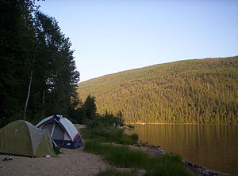

Camping
Camping is an outdoor recreational activity. The participants
(known as campers) leave urban areas, their home region, or
civilization and enjoy nature while spending one or several
nights outdoors, usually at a campsite. Camping may involve
the use of a tent, caravan, motorhome, cabin, a primitive
structure, or no shelter at all. In many parts of the world,
camping refers exclusively to the use of tents or similar
portable structures. Camping as a recreational activity became
popular in the early 20th century. Campers frequent national
or state parks, other publicly owned natural areas, and privately
owned campgrounds. Camping is a key part of many youth organizations
around the world, such as scouting. It is used to teach
self-reliance and teamwork. Camping is also used as a inexpensive
form of accommodation for people attending large open air events
such as sporting meetings and music festivals. Organizers often
provide a field and other basic amenities. Information on this
page is from Wikipedia Camping
Definition

Camping describes a range of activities. Survivalist campers set off
with little more than their boots, whereas recreational vehicle
travelers arrive equipped with their own electricity, heat, and
patio furniture. Camping is often enjoyed in conjunction with
activities, such as: canoeing, climbing, fishing, hill walking,
mountain biking, motorcycling, swimming, and whitewater kayaking.
Camping may also be combined with hiking, either as backpacking
or as a series of day hikes from a central location.
Specialized Camping
Adventure camping is a form of camping by people who race
(possibly adventure racing or mountain biking) during the day,
and camp in a minimalist way at night. They might use the basic
items of camping equipment such as a micro-camping stove,
sleeping bag, and bivouac bag.
Glamping (glamorous camping) is a growing global phenomenon
that combines camping with the luxury and amenities of a home
or hotel. Also called boutique camping, luxury camping, posh
camping or comfy camping, glamping allows travelers to experience
nature without the hassle of finding camp space, carrying their
tents, and erecting and taking down their own tents. Lodgings at
a glamping sites (glampsites) include structures such as yurts,
tipis, pods, bell tents, safari tents, tent cabins, and tree houses.
Glampsites range in price from as little as $50 per night to
thousands of dollars per night, depending on the level of luxury.
Sites offer amenities such as fresh bed linens, en suite washrooms,
food service, private verandas, and, most importantly, direct
access to the great outdoors.
List of Common Equipment
- Tent
- Mallet to drive tent stakes into the soil
- Sleeping pad or air mattress to be placed underneath the sleeping bag
- Lantern or flashlight
- First Aid Kit
- bandaids
- antibiotic cream
- adhesive tape
- splints
- Cooler containing food